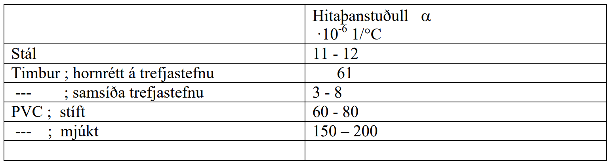
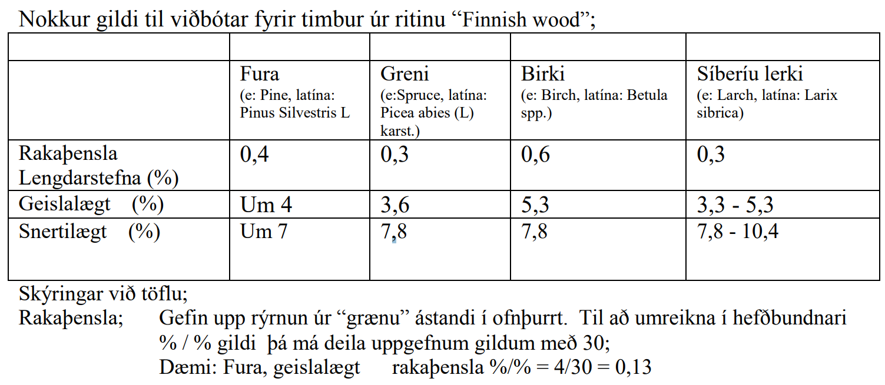
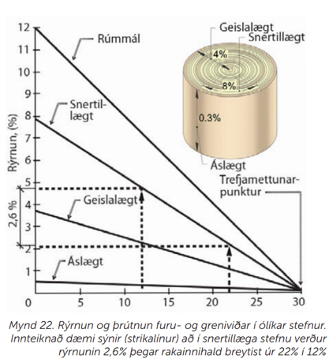
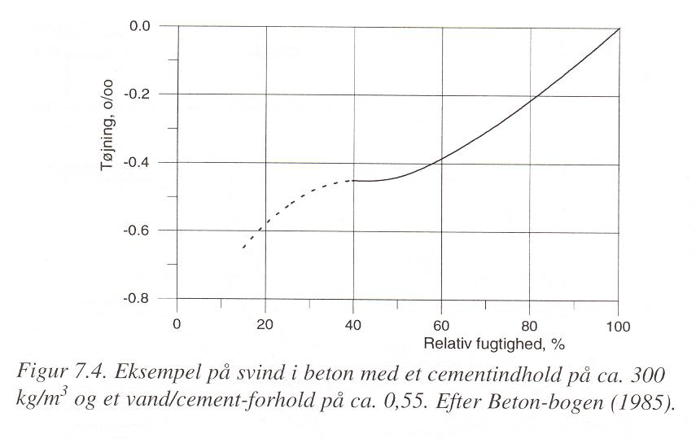
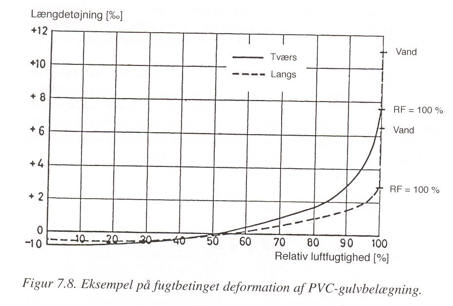

7. Kafli - Rúmmálsstöðugleiki
Í kafla 6 var getið um hlutfallsstærðarbreytingar, \(\varepsilon_1\), \(\varepsilon_2\), (í lengdar- og þverstefnu) vegna álags. Hlutfallslegar stærðarbreytingar geta einnig orðið vegna hita- eða rakaáhrifa, og samfara þessum stærðarbreytingum verður vitaskuld einnig rúmmálsbreyting, \(\Delta V\) og hægt er að skilgreina hlutfallslega rúmmálsbreytingu \(\varepsilon_V\);
þá fæst rúmmál eftir stærðarbreytingu sem
Fyrir upphafsstærðirnar \(l_{x,0}\), \(l_{y,0}\) og \(l_{z,0}\) og samsvarandi stærðarbreytingar \(\varepsilon_x\), \(\varepsilon_y\), \(\varepsilon_z\), fæst
(gildir þokkalega fyrir hlutfallsbreytingar <1%)
7.1. Hitaháðar stærðarbreytingar
Hitabreyting í efni veldur almennt einhverri stærðarbreytingu; aukið hitastig veldur aukinni hreyfingu rafeinda í efninu, stærð frumeindanna vex og meðalfjarlægð þeirra innbyrðis einnig.
Hitaþensla er fundin þannig;
þar sem
\(\Delta l\) |
stærðarbreyting |
m |
\(\alpha\) |
hitaþanstuðull |
\(\textrm{1}/^{\circ} C\) eða 1/K |
\(\Delta T\) |
hitabreyting |
\(^{\circ} C\) eða K |
\(l_0\) |
upphafslengd |
m |
útfrá skilgreiningu á hlutfallslengingu fæst;
og fyrir línulega fjaðrandi efni, þar sem lengdarfærslan er hindruð (!), fæst spenna, \(\sigma\), vegna hitabreytingar sem
Vert er að athuga að;
varmaþenslustuðull margra plastefna er mjög hár samanborið við önnur byggingarefni
varmaþenslustuðull timburs er mjög mismunandi eftir stefnu í efninu.
{kind=link}

Dæmi:
Hitaþanstuðull fyrir stál er \(\alpha = 12 \cdot 10^{-6} 1/^{\circ}C\), hvað þenst stálstöng á hvern lengdarmetra við það að hitna um \(50 ^{\circ}C\) ?
Svar:
7.2. Rakaháðar stærðarbreytingar
Þegar rakadræg efni taka rakabreytingu, þá veldur slíkt almennt einhverri stærðarbreytingu; efnin skreppa saman við minnkandi efnisraka, en þrútna út við aukinn raka.
Ástæður stærðarbreytinganna má rekja til
Þrýstings í vatnsfilmu á póruveggjum
Þrýstingsaukningar (í smáum pórum)
Undirþrýstings í háræðum (gildir einungis fyrir háan hlutfallsraka)
Rakaþenslur efna eru því mjög háðar stærðardreifingu póra í efninu og styrkeiginleikum. Rakaþensla í timbri er vegna þess að vatns kemst inn á milli fjölliðukeðja í efninu, sem veldur rúmmálsaukningu (mest þvert á keðjurnar). Við vaxandi rakainnihald (yfir trefjamettunarmörkum) byrjar vatn að safnast saman í holrými frumanna en þetta vatn hefur engin áhrif til rúmmálsbreytinga í efninu.
Rakaþenslur eru fundnar á hliðstæðan hátt við hitaþenslur;,
þar sem
\(\Delta l\) |
stærðarbreyting |
m |
\(a\) |
rakaþenslustuðull |
%/% |
\(\Delta u\) |
breyting í efnisraka |
% |
\(l_0\) |
upphafslengd |
m |
Rakaþenslustuðull efna er alltaf gefinn upp fyrir einhverja breytingu í efnisraka, en þessi breyting getur verið af mismunandi stærð. Fyrir timbur sjást iðulega gildi fyrir rakabreytingu úr “blautu” ástandi í þurrt (þ.e. \(\Delta u \approx 30 \%\)).
{kind=link}

{kind=link}

Myndin fengin úr Rb-blaði [Sig16]
{kind=link}

Steypa tekur allnokkrum stærðarbreytingum háð rakabreytingu – það má vænta þess að rakaþensla sé svipuð og rýrnunin á línuritinu 7.4
{kind=link}

Plast hefur miklar rakahreyfingar.. og einnig miklar hitahreyfingar eins og áður getur.
7.2.1. Heimildir
Kenneth Breiðfjörð. Byggingarefni á íslandi. uppruni, flutningar til landsins ásamt kolefnisspori timburs. Master's thesis, Háskóli Íslands, 2011.
Rodrigo Mero Sarmento da Silva and Aline da Silva Ramos Barboza. Concrete modeling using micromechanical multiphase models and multiscale analysis. Rev. IBRACON Estrut. Mater., 2023.
GreenChemUofT. Green marketing in the plastic era: honesty or hype? Sep 2019. URL: https://greenchemuoft.wordpress.com/2019/09/13/green-marketing-in-the-plastic-era-honesty-or-hype/.
F.R. Gottfredsen og Anders Nielsen. Bygningsmaterialer grundlæggende egenskaber. Polyteknisk Forlag, 2000.
Guðmundur Halldórsson og Jón Sigurjónsson. Einangrun húsa. Rannsóknastofnun byggingariðnaðarins, 2 edition, 1978.
Björn Marteinsson og Páll Valdimarsson. Efnis- og orkunotkun vegna bygginga á íslandi. Árbók VFÍ/TFÍ, 14(1):223–228, 2002.
Jón Sigurjónsson. Rb-blað: Tré - trjátegundir og efniseiginleikar viðarins. Nýsköpunarmiðstöð Íslands, 2016.
Emil Engelund Thybring and Maria Fredriksson. Wood modification as a tool to understand moisture in wood. Forests, 12(3):372, mar 2021.
Jr. William D. Callister and David G. Rethwisch. Callister's Materials Science and Engineering. Wiley, 2020.